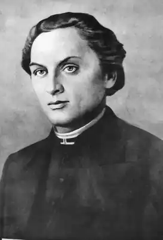
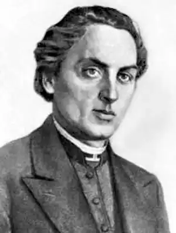

МАРКІЯН ШАШКЕВИЧ
(1811 — 1843)
Маркіян Семенович Шашкевич народився 6 листопада 1811р. в с. Підліссі, Золочівського повіту в Галичині, в сім'ї священика. Учився спочатку в гімназії у м. Бережанах, а з 1829р. — у Львівській семінарії. В час перебування в семінарії Шашкевич розпочав свою творчу діяльність; тоді ж він організував літературний гурток молоді. Перші твори Шашкевича з'явилися в збірнику "Русалка Дністровая" (1837). Перу М. Шашкевича, крім ряду поезій, належить кілька прозаїчних творів. Найвизначніший з них — казка "Олена", високо оцінена Іваном Франком. Шашкевич був одним з поетів "Руської трійці", організатором цього гуртка і невтомним культурним діячем. Крім поезій і прозових творів, йому належать переклади на українську мову сербських народних пісень, віршів чеських і польських поетів. Помер Шашкевич 7 червня 1843 року.